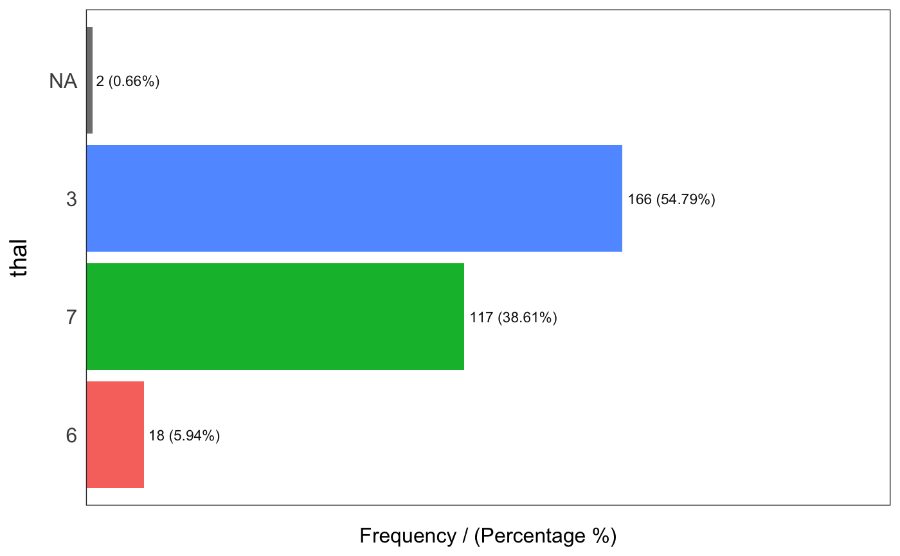
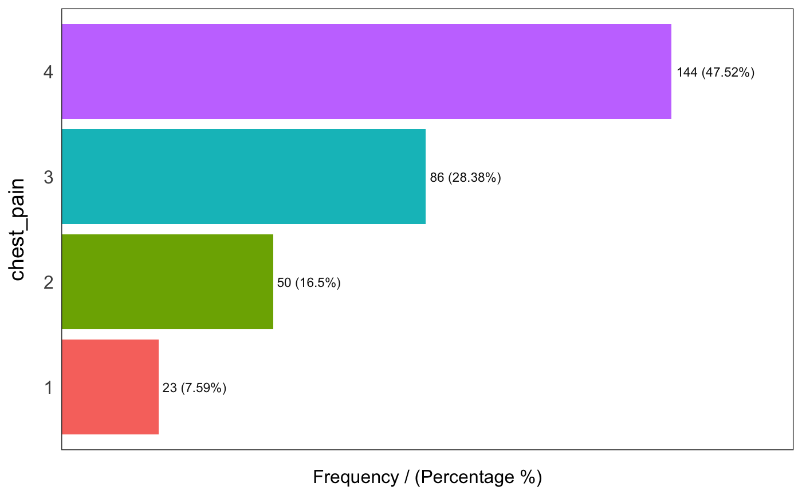

freq.RdRetrieves the frequency and percentage for input
freq(data, input = NA, plot = TRUE, na.rm = FALSE, path_out)
| data | input data containing the variable to describe |
|---|---|
| input | string input variable (if empty, it runs for all numeric variable), it can take a single character value or a character vector. |
| plot | flag indicating if the plot is desired, TRUE by default |
| na.rm | flag indicating if NA values must be included in the analysis, FALSE by default |
| path_out | path directory, if it has a value the plot is saved |
vector with the values scaled into the 0 to 1 range
freq(data=heart_disease$thal)#> var frequency percentage cumulative_perc #> 1 3 166 54.79 54.79 #> 2 7 117 38.61 93.40 #> 3 6 18 5.94 99.34 #> 4 <NA> 2 0.66 100.00#> thal frequency percentage cumulative_perc #> 1 3 166 54.79 54.79 #> 2 7 117 38.61 93.40 #> 3 6 18 5.94 99.34 #> 4 <NA> 2 0.66 100.00 #>#> chest_pain frequency percentage cumulative_perc #> 1 4 144 47.52 47.52 #> 2 3 86 28.38 75.90 #> 3 2 50 16.50 92.40 #> 4 1 23 7.59 100.00 #>#> [1] "Variables processed: thal, chest_pain"